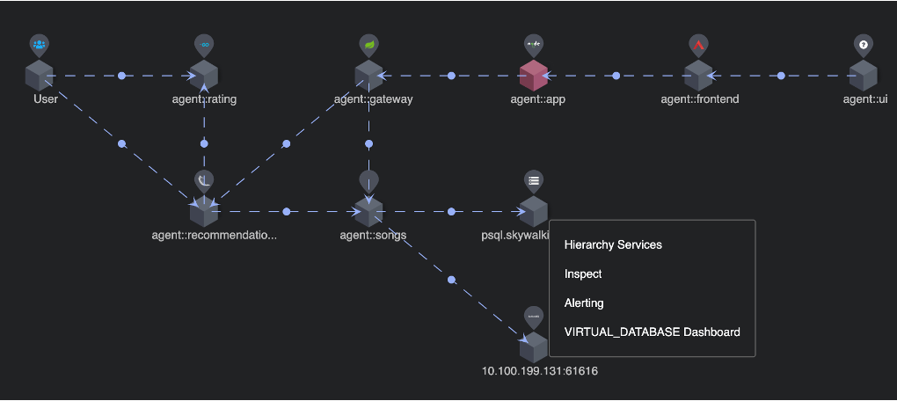
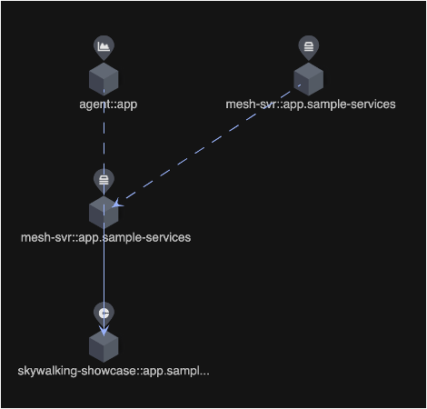
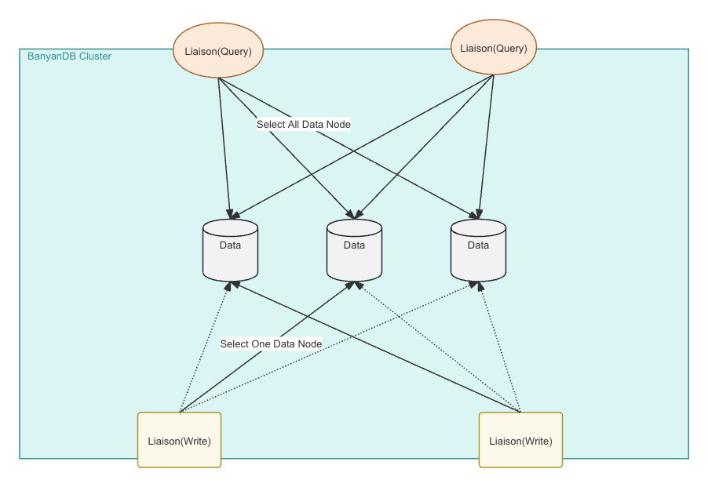

SkyWalking 10.0.0 is released. Go to downloads page to find release tars.
Service Hierarchy
| Service Hierarchy | Hierarchy Graph |
|---|---|
 |
 |
Run with BanyanDB 0.6 in the Cluster Mode

Project
- Support Java 21 runtime.
- Support oap-java21 image for Java 21 runtime.
- Upgrade
OTEL collectorversion to0.92.0in all e2e tests. - Switch CI macOS runner to m1.
- Upgrade PostgreSQL driver to
42.4.4to fix CVE-2024-1597. - Remove CLI(
swctl) from the image. - Remove CLI_VERSION variable from Makefile build.
- Add BanyanDB to docker-compose quickstart.
- Bump up Armeria, jackson, netty, jetcd and grpc to fix CVEs.
- Bump up BanyanDB Java Client to 0.6.0.
OAP Server
- Add
layerparameter to the global topology graphQL query. - Add
is_presentfunction in MQE for check if the list metrics has a value or not. - Remove unreasonable default configurations for gRPC thread executor.
- Remove
gRPCThreadPoolQueueSize (SW_RECEIVER_GRPC_POOL_QUEUE_SIZE)configuration. - Allow excluding ServiceEntries in some namespaces when looking up ServiceEntries as a final resolution method of service metadata.
- Set up the length of source and dest IDs in relation entities of service, instance, endpoint, and process to 250(was 200).
- Support build Service/Instance Hierarchy and query.
- Change the string field in Elasticsearch storage from keyword type to text type if it set more than
32766length. - [Break Change] Change the configuration field of
ui_templateandui_menuin Elasticsearch storage from keyword type to text. - Support Service Hierarchy auto matching, add auto matching layer relationships (upper -> lower) as following:
- MESH -> MESH_DP
- MESH -> K8S_SERVICE
- MESH_DP -> K8S_SERVICE
- GENERAL -> K8S_SERVICE
- Add
namespacesuffix forK8S_SERVICE_NAME_RULE/ISTIO_SERVICE_NAME_RULEandmetadata-service-mapping.yamlas default. - Allow using a dedicated port for ALS receiver.
- Fix log query by traceId in
JDBCLogQueryDAO. - Support handler eBPF access log protocol.
- Fix SumPerMinFunctionTest error function.
- Remove unnecessary annotations and functions from Meter Functions.
- Add
maxandminfunctions for MAL down sampling. - Fix critical bug of uncontrolled memory cost of TopN statistics. Change topN group key from
StorageIdtoentityId + timeBucket. - Add Service Hierarchy auto matching layer relationships (upper -> lower) as following:
- MYSQL -> K8S_SERVICE
- POSTGRESQL -> K8S_SERVICE
- SO11Y_OAP -> K8S_SERVICE
- VIRTUAL_DATABASE -> MYSQL
- VIRTUAL_DATABASE -> POSTGRESQL
- Add Golang as a supported language for AMQP.
- Support available layers of service in the topology.
- Add
countaggregation function for MAL - Add Service Hierarchy auto matching layer relationships (upper -> lower) as following:
- NGINX -> K8S_SERVICE
- APISIX -> K8S_SERVICE
- GENERAL -> APISIX
- Add Golang as a supported language for RocketMQ.
- Support Apache RocketMQ server monitoring.
- Add Service Hierarchy auto matching layer relationships (upper -> lower) as following:
- ROCKETMQ -> K8S_SERVICE
- VIRTUAL_MQ -> ROCKETMQ
- Fix ServiceInstance
inquery. - Mock
/api/v1/status/buildinfofor PromQL API. - Fix table exists check in the JDBC Storage Plugin.
- Fix day-based table rolling time range strategy in JDBC storage.
- Add
maxInboundMessageSize (SW_DCS_MAX_INBOUND_MESSAGE_SIZE)configuration to change the max inbound message size of DCS. - Fix Service Layer when building Events in the EventHookCallback.
- Add Golang as a supported language for Pulsar.
- Add Service Hierarchy auto matching layer relationships (upper -> lower) as following:
- RABBITMQ -> K8S_SERVICE
- VIRTUAL_MQ -> RABBITMQ
- Remove Column#function mechanism in the kernel.
- Make query
readMetricValuealways return the average value of the duration. - Add Service Hierarchy auto matching layer relationships (upper -> lower) as following:
- KAFKA -> K8S_SERVICE
- VIRTUAL_MQ -> KAFKA
- Support ClickHouse server monitoring.
- Add Service Hierarchy auto matching layer relationships (upper -> lower) as following:
- CLICKHOUSE -> K8S_SERVICE
- VIRTUAL_DATABASE -> CLICKHOUSE
- Add Service Hierarchy auto matching layer relationships (upper -> lower) as following:
- PULSAR -> K8S_SERVICE
- VIRTUAL_MQ -> PULSAR
- Add Golang as a supported language for Kafka.
- Support displaying the port services listen to from OAP and UI during server start.
- Refactor data-generator to support generating metrics.
- Fix
AvgHistogramPercentileFunctionlegacy name. - [Break Change] Labeled Metrics support multiple labels.
- Storage: store all label names and values instead of only the values.
- MQE:
- Support querying by multiple labels(name and value) instead using
_as the anonymous label name. aggregate_labelsfunction support aggregate by specific labels.relabelsfunction require target label and rename label name and value.
- Support querying by multiple labels(name and value) instead using
- PromQL:
- Support querying by multiple labels(name and value) instead using
lablesas the anonymous label name. - Remove general labels
labels/relabels/labelfunction. - API
/api/v1/labelsand/api/v1/label/<label_name>/valuessupport return matched metrics labels.
- Support querying by multiple labels(name and value) instead using
- OAL:
- Deprecate
percentilefunction and introducepercentile2function instead.
- Deprecate
- Bump up Kafka to fix CVE.
- Fix
NullPointerExceptionin Istio ServiceEntry registry. - Remove unnecessary
componentIdsas series ID in theServiceRelationClientSideMetricsandServiceRelationServerSideMetricsentities. - Fix not throw error when part of expression not matched any expression node in the
MQEand `PromQL. - Remove
kafka-fetcher/default/createTopicIfNotExistas the creation is automatically since #7326 (v8.7.0). - Fix inaccuracy nginx service metrics.
- Fix/Change Windows metrics name(Swap -> Virtual Memory)
memory_swap_free->memory_virtual_memory_freememory_swap_total->memory_virtual_memory_totalmemory_swap_percentage->memory_virtual_memory_percentage
- Fix/Change UI init setting for Windows Swap -> Virtual Memory
- Fix
Memory Swap Usage/Virtual Memory Usagedisplay with UI init.(Linux/Windows) - Fix inaccurate APISIX metrics.
- Fix inaccurate MongoDB Metrics.
- Support Apache ActiveMQ server monitoring.
- Add Service Hierarchy auto matching layer relationships (upper -> lower) as following:
- ACTIVEMQ -> K8S_SERVICE
- Calculate Nginx service HTTP Latency by MQE.
- MQE query: make metadata not return
null. - MQE labeled metrics Binary Operation: return empty value if the labels not match rather than report error.
- Fix inaccurate Hierarchy of RabbitMQ Server monitoring metrics.
- Fix inaccurate MySQL/MariaDB, Redis, PostgreSQL metrics.
- Support DoubleValue,IntValue,BoolValue in OTEL metrics attributes.
- [Break Change] gGRPC metrics exporter unified the metric value type and support labeled metrics.
- Add component definition(ID=152) for
c3p0(JDBC3 Connection and Statement Pooling). - Fix MQE
top_nglobal query. - Fix inaccurate Pulsar and Bookkeeper metrics.
- MQE support
sort_valuesandsort_label_valuesfunctions.
UI
- Fix the mismatch between the unit and calculation of the “Network Bandwidth Usage” widget in Linux-Service Dashboard.
- Add theme change animation.
- Implement the Service and Instance hierarchy topology.
- Support Tabs in the widget visible when MQE expressions.
- Support search on Marketplace.
- Fix default route.
- Fix layout on the Log widget.
- Fix Trace associates with Log widget.
- Add isDefault to the dashboard configuration.
- Add expressions to dashboard configurations on the dashboard list page.
- Update Kubernetes related UI templates for adapt data from eBPF access log.
- Fix dashboard
K8S-Service-Rootmetrics expression. - Add dashboards for Service/Instance Hierarchy.
- Fix MQE in dashboards when using
Card widget. - Optimize tooltips style.
- Fix resizing window causes the trace graph to display incorrectly.
- Add the not found page(404).
- Enhance VNode logic and support multiple Trace IDs in span’s ref.
- Add the layers filed and associate layers dashboards for the service topology nodes.
- Fix
Nginx-Instancemetrics to instance level. - Update tabs of the Kubernetes service page.
- Add Airflow menu i18n.
- Add Support for dragging in the trace panel.
- Add workflow icon.
- Metrics support multiple labels.
- Support the
SINGLE_VALUEfor table widgets. - Remove the General metric mode and related logical code.
- Remove metrics for unreal nodes in the topology.
- Enhance the Trace widget for batch consuming spans.
- Clean the unused elements in the UI-templates.
Documentation
- Update the release doc to remove the announcement as the tests are through e2e rather than manually.
- Update the release notification mail a little.
- Polish docs structure. Move customization docs separately from the introduction docs.
- Add webhook/gRPC hooks settings example for
backend-alarm.md. - Begin the process of
SWIP - SkyWalking Improvement Proposal. - Add
SWIP-1 Create and detect Service Hierarchy Relationship. - Add
SWIP-2 Collecting and Gathering Kubernetes Monitoring Data. - Update the
Overviewdocs to add theService Hierarchy Relationshipsection. - Fix incorrect words for
backend-bookkeeper-monitoring.mdandbackend-pulsar-monitoring.md - Document a new way to load balance OAP.
- Add
SWIP-3 Support RocketMQ monitoring. - Add
OpenTelemetry SkyWalking Exporterdeprecated warning doc. - Update i18n for rocketmq monitoring.
- Fix: remove click event after unmounted.
- Fix: end loading without query results.
- Update nanoid version to 3.3.7.
- Update postcss version to 8.4.33.
- Fix kafka topic name in exporter doc.
- Fix query-protocol.md, make it consistent with the GraphQL query protocol.
- Add
SWIP-5 Support ClickHouse Monitoring. - Remove
OpenTelemetry Exportersupport from meter doc, as this has been flagged as unmaintained on OTEL upstream. - Add doc of one-line quick start script for different storage types.
- Add FAQ for
Why is Clickhouse or Loki or xxx not supported as a storage option?. - Add
SWIP-8 Support ActiveMQ Monitoring. - Move BanyanDB storage to the recommended storage.
All issues and pull requests are here